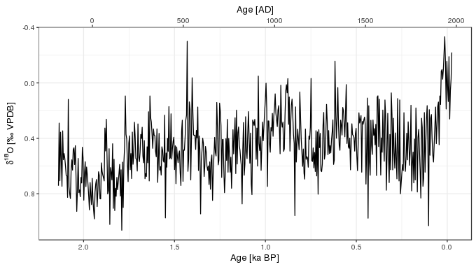
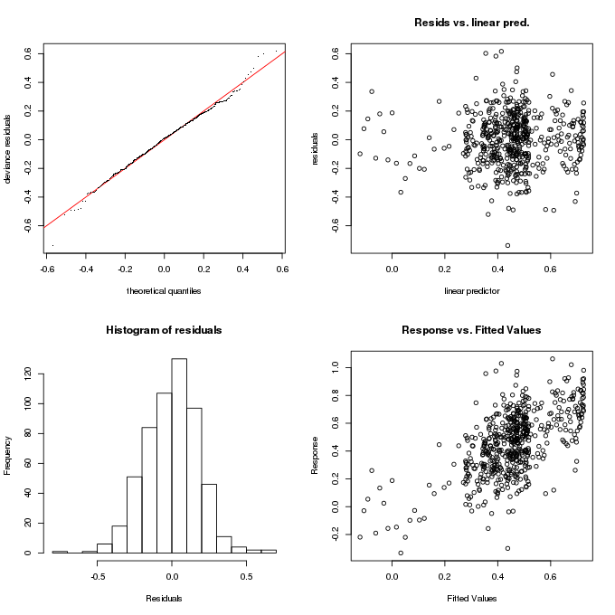
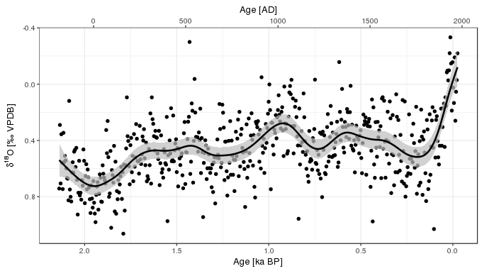

Pangaea and R and open palaeo data
(also GAM all the things!)
Blogroll
For a while now, I’ve been wanting to experiment with rOpenSci’s pangaear package (Chamberlain et al., 2016), which allows you to search, and download data from, the Pangaea, a major data repository for the earth and environmental sciences. Earlier in the year, as a member of the editorial board of Scientific Data, Springer Nature’s open data journal I was handling a data descriptor submission that described a new 2,200-year foraminiferal δ18O record from the Gulf of Taranto in the Ionian Sea (Taricco et al., 2016). The data descriptor was recently published and as part of the submission Carla Taricco deposited the data set in Pangaea. So, what better opportunity to test out pangaear? (Oh and to fit a GAM to the data while I’m at it!)
The post makes use of the following packages: pangaear (obviously), mgcv and ggplot2 for modelling and plotting, and tibble because pangaear returns search results and data sets in tibbles that I need to manipulate before I can fit a GAM to the δ18O record.
library("pangaear")
library("tibble")
library("ggplot2")
theme_set(theme_bw())
library("mgcv")To download a data set from Pangaea you need to know the DOI of the deposit. If you don’t know the Pangaear DOI, you can search the data records held by Pangaea for specific terms. In pangaear searching is done using the pg_search() function. To find the data set I want, I’m going to search for records that have the string "Taricco" in the citation.
recs <- pg_search(query = "citation:Taricco")
recs$citation[1] "Versteegh, GJM; de Leeuw, JW; Taricco, C et al. (2007): Alkenone-derived UK'37 data and sea surface temperatures (SST) of sediment cores from the Gulf of Taranto (Italy)"
[2] "Taricco, C; Alessio, S; Rubinetti, S et al. (2016): A foraminiferal d18O record of sediment core GT90-3 covering the last 2,200 years"
[3] "Versteegh, GJM; de Leeuw, JW; Taricco, C et al. (2007): Alkenone-derived UK'37 data and sea surface temperatures (SST) of sediment core GT89-3"
[4] "Versteegh, GJM; de Leeuw, JW; Taricco, C et al. (2007): Alkenone-derived UK'37 data and sea surface temperatures (SST) of a combined sediment core"
[5] "Versteegh, GJM; de Leeuw, JW; Taricco, C et al. (2007): Alkenone-derived UK'37 data and sea surface temperatures (SST) of sediment core GT91-1"
[6] "Versteegh, GJM; de Leeuw, JW; Taricco, C et al. (2007): Alkenone-derived UK'37 data and sea surface temperatures (SST) of sediment core GT90-3"
Assuming that the query didn’t time out (Pangaea can be a little slow to respond on occasion, so you might find increasing the timeout on the query helps), recs shoud contain 6 records with "Taricco" in the citation. The one we want is the second entry.
To download the data object(s) associated with a record in Pangaea, we use the pg_data() function, supplying it with a single DOI.
res <- pg_data(doi = recs$doi[2]) # doi = "10.1594/PANGAEA.857573"Downloading 1 datasets from 10.1594/PANGAEA.857573
Processing 1 files
res
str(res[[1]], max = 1)[[1]]
<Pangaea data> 10.1594/PANGAEA.857573
# A tibble: 560 × 4
`Depth [m]` `Age [a AD]` `Age [ka BP]` `G. ruber d18O [per mil PDB]`
<dbl> <dbl> <dbl> <dbl>
1 1.4000 -188.20 2.13820 0.742
2 1.3975 -184.33 2.13433 0.290
3 1.3950 -180.46 2.13046 0.706
4 1.3925 -176.59 2.12659 0.356
5 1.3900 -172.72 2.12272 0.558
6 1.3875 -168.85 2.11885 0.746
7 1.3850 -164.98 2.11498 0.346
8 1.3825 -161.11 2.11111 0.554
9 1.3800 -157.24 2.10724 0.510
10 1.3775 -153.37 2.10337 0.543
# ... with 550 more rows
List of 4
$ doi : chr "10.1594/PANGAEA.857573"
$ citation:List of 1
..- attr(*, "class")= chr "citation"
$ meta :List of 1
..- attr(*, "class")= chr "meta"
$ data :Classes 'tbl_df', 'tbl' and 'data.frame': 560 obs. of 4 variables:
- attr(*, "class")= chr "pangaea"
In Pangaea, a DOI might refer to a collection of data objects, in which case the object returned by pg_data() would be a list with as many components as objects in the collection. In this instance there is but a single data object associated with the requested DOI, but for consistency it is returned in a list with a single component.
Rather than work with the pangaea object directly, for modelling or plotting it is, for the moment at least, going to be simpler if we extract out the data object, which is stored in the $data component. We’ll also want to tidy up those variable/column names
foram <- res[[1]]$data
names(foram) <- c("Depth", "Age_AD", "Age_kaBP", "d18O")
foram# A tibble: 560 × 4
Depth Age_AD Age_kaBP d18O
<dbl> <dbl> <dbl> <dbl>
1 1.4000 -188.20 2.13820 0.742
2 1.3975 -184.33 2.13433 0.290
3 1.3950 -180.46 2.13046 0.706
4 1.3925 -176.59 2.12659 0.356
5 1.3900 -172.72 2.12272 0.558
6 1.3875 -168.85 2.11885 0.746
7 1.3850 -164.98 2.11498 0.346
8 1.3825 -161.11 2.11111 0.554
9 1.3800 -157.24 2.10724 0.510
10 1.3775 -153.37 2.10337 0.543
# ... with 550 more rows
Now that’s done, we can take a look at the data set
ylabel <- expression(delta^{18} * O ~ "[‰ VPDB]")
xlabel <- "Age [ka BP]"
ggplot(foram, aes(y = d18O, x = Age_kaBP)) +
geom_path() +
scale_x_reverse(sec.axis = sec_axis( ~ 1950 - (. * 1000), name = "Age [AD]")) +
scale_y_reverse() +
labs(y = ylabel, x = xlabel)
Notice that the x-axis has been reversed on this plot so that as we move from left to right the observations become younger, as is standard for a time series. In the code block above I’ve used sec_axis() to add an AD scale to the x-axis. This is a new feature in version 2.2.0 of ggplot2 which allows secondary axis that is a one-to-one transformation of the main scale. This isn’t quite right as the two scales don’t map in a fully one-to-one fashion; as there is no year 0AD (or 0<abbrv, title = “Before Common Era”>BCE), the scale will be a year out for the BCE period.
Note too that the y-axis has also been reversed, to match the published versions of the data. This is done in those publications because δ18O has an interpretation as temperature, with lower δ18O indicating higher temperatures. As is common for data from proxies that have a temperature interpretation, the values are plotted in a way that up on the plot means warmer and down means colder.
To model the data in the same time ordered way using the year BP variable we need to create a variable that is the negative of Age-kaBP.
foram <- with(foram, add_column(foram, Age = - Age_kaBP))Note that we don’t want to use the Age_AD scale for this as this has the problem of having a discontinuity at 0AD (which doesn’t exist).
Now we can fit a GAM to the δ18O record
m <- gam(d18O ~ s(Age, k = 100, bs = "ad"), data = foram, method = "REML", select = TRUE)In this instance I used an adaptive spline basis bs = "ad", which allows the degree of wiggliness to vary along the fitted function. With a relatively large data set like this, which has over 500 observations, using an adaptive smoother can provide a better fit to the observations, and it is especially useful in situations where it is plausible that the response will vary more over some time periods than others. Adaptive smooths aren’t going to work well in short time series; there just isn’t the information available to estimate what in effect can be thought of as several separate splines over small chunks of the data. That said, I’ve had success with data sets with about 100–200 observations. Also note that fitting an adaptive smoother requires cranking the CPU over a lot more calculations; be aware of that if you throw a very large data set at it.
Also note that the model was fitted using REML — in most cases this is the default you want to be using as GCV can undersmooth in some circumstances. The double penalty approach of Marra and Wood (2011) is used here too (select = TRUE), which in this instance is being used to apply a bit of shrinkage to the fitted trend; it’s good to be a little conservative at times.
The model diagnostics look OK for this model and the check of sufficient dimensionality in the basis doesn’t indicate anything to worry about (partly because we used a large basis in the first place: 99 = k - 1 = 100 - 1)
gam.check(m)
## RStudio users might need
## layout(matrix(1:4, ncol = 2, byrow = TRUE))
## gam.check(m)
## layout(1)
## to see all the plots on one deviceMethod: REML Optimizer: outer newton
full convergence after 26 iterations.
Gradient range [-0.0003244869,0.000148452]
(score -128.435 & scale 0.03324845).
Hessian positive definite, eigenvalue range [6.249446e-06,279.6116].
Model rank = 100 / 100
Basis dimension (k) checking results. Low p-value (k-index<1) may
indicate that k is too low, especially if edf is close to k'.
k' edf k-index p-value
s(Age) 99.000 15.539 0.993 0.44

and the fitted trend is inconsistent with a null-model of no trend
summary(m)Family: gaussian
Link function: identity
Formula:
d18O ~ s(Age, k = 100, bs = "ad")
Parametric coefficients:
Estimate Std. Error t value Pr(>|t|)
(Intercept) 0.455329 0.007705 59.09 <2e-16 ***
---
Signif. codes: 0 '***' 0.001 '**' 0.01 '*' 0.05 '.' 0.1 ' ' 1
Approximate significance of smooth terms:
edf Ref.df F p-value
s(Age) 15.54 99 3.357 <2e-16 ***
---
Signif. codes: 0 '***' 0.001 '**' 0.01 '*' 0.05 '.' 0.1 ' ' 1
R-sq.(adj) = 0.373 Deviance explained = 39%
-REML = -128.44 Scale est. = 0.033248 n = 560
There is a lot of variation about the fitted trend, but a model with about 15 degrees of freedom explains about 40% of the variance in the data set, which is pretty good.
While we could use the provided plot() method for "gam" objects to draw the fitted function, I now find myself prefering plotting with ggplot2. To recreate the sort of plot that plot.gam() would produce, we first need to predict for a fine grid of values, here 200 values, over the observed time interval. predict.gam() is used to generate predictions and standard errors; the standard errors requested here use a new addition to mgcv which includes the extra uncertainty in the model because we are also estimating the smoothness parameters (the parameters that control the degree of wiggliness in the spline). This is achieved through the use of unconditional = TRUE in the call to predict(). The standard errors you get with the default, unconditional = FALSE, assume that the smoothness parameters, and therefore the amount of wiggliness, is known before fitting, which is rarely the case. This doesn’t make much difference in this example, but I thought I’d mention it as it is a relatively new addition to mgcv.
pred <- with(foram, data.frame(Age = -seq(min(Age_kaBP), max(Age_kaBP), length = 200)))
pred <- cbind(pred, as.data.frame(predict(m, pred, se.fit = TRUE, unconditional = TRUE)))
pred <- transform(pred,
Fitted = fit,
Upper = fit + (2 * se.fit),
Lower = fit - (2 * se.fit),
Age_kaBP = - Age)The code above uses these standard errors to create an approximate 95% point-wise confidence on the fitted function, and prepares this in tidy format for plotting with ggplot().
ggplot(foram, aes(y = d18O, x = Age_kaBP)) +
geom_point() +
geom_ribbon(data = pred, mapping = aes(x = Age_kaBP, ymin = Lower, ymax = Upper),
fill = "grey", colour = NA, alpha = 0.7, inherit.aes = FALSE) +
geom_path(data = pred, mapping = aes(x = Age_kaBP, y = Fitted), inherit.aes = FALSE,
size = 1) +
scale_x_reverse(sec.axis = sec_axis( ~ 1950 - (. * 1000), name = "Age [AD]")) +
scale_y_reverse() +
labs(y = ylabel, x = xlabel)
Taricco et al. (2009) used singular spectrum analysis (SSA), among other spectral methods, to decompose the δ18O time series into components of variability with a range of periodicities. A visual comparison with the SSA components and the fitted GAM trend, suggests that the GAM trend maps on to the sum of the long-term trend component plus the ~600 year and (potentially) the 350 year frequency components of the SSA. This does make we wonder a little about how real the higher frequency components identified in the SSA are? No matter how hard I tried (even setting the basis dimension of the GAM to k = 500) I couldn’t get it to be more wiggly than shown in the plots above). Figure 4 of Taricco et al. (2009) also showed the spectral power for the 4 non-trend components from the SSA. The power associated with the 200-year and the 125-year components is substantially less than that of the two longer-frequency components. The significance of the SSA components was determined using a Monte Carlo approach (Allen and Smith, 1996), where surrogate time series are generate using AR(1) noise. It’s reasonable to ask whether this is a reasonable null model for these data? It’s also reasonable to ask whether the GAM approach I used above has sufficient statistical power to detect higher-freqency components if they actually exist? This warrants further study.
I started this post with some details on why I was prompted to look at this particular data set. Palaeo-scientists have a long record of sharing data — less so in some specific fields: yes, I’m looking at you (& me), palaeolimnologists — but, and perhaps this is just me, I’m seeing more of an open-data culture within palaeoecology and palaeoclimatology. This is great to see, and avenues for publishing and hence generating traditional academic merit for the data we generate will only help foster this. With my “editorial board member” hat on, I would encourage people to consider writing a data paper and submitting it to Scientific Data or one of the other data journals that are springing up. But, if you can’t or don’t want to do that, depositing your data in an open repository like Pangaea brings with it many benefits and is something that we the palaeo community should be supportive of. I wouldn’t have been writing this post if Tarrico and co-authors hadn’t chosen to make their data openly available.
And that brings me on to my final point for this post; having access to an excellent data repository like Pangaea from within a data analysis platform like R makes it so much easier to engaged with the literature and ask new and interesting questions. I’ve highlighted Pangaea here, but other initiatives are doing a great job of making palaeo data available and also deserve our recognition and support, like the Neotoma database; we might take access to these reources for granted, but implementing and maintaining web servers and APIs requires a lot of time, effort, and resources. Also, this post wouldn’t have been possible without the work of the wonderful rOpenSci community that make available R packages to query the APIs of online repositories like Pangaea and Neotoma. Thank you!
Social